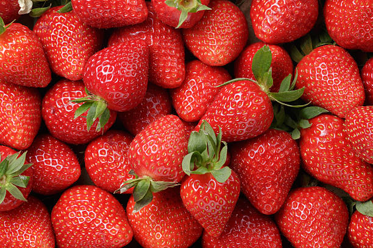
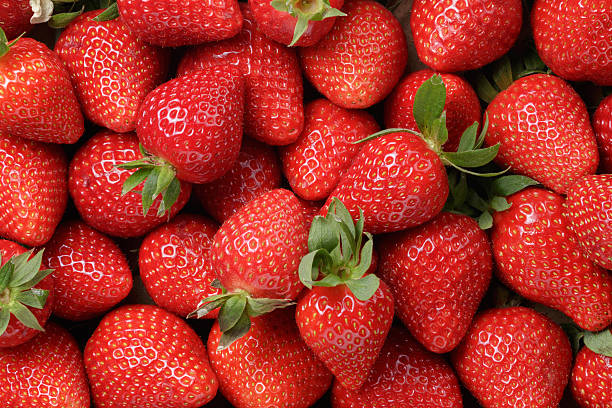

Our Products

Goat
Strong, healthy goats raised naturally on open pasture.

Duck
Free-range ducks, perfect for delicious meals.

Onion
Freshly harvested onions with strong aroma and flavor.

Tomato
Juicy red tomatoes, rich in nutrients and taste.

Eggs
Organic eggs from happy, healthy chickens.

Turkey
Well-fed turkeys ideal for hearty meals and special occasions.

 
